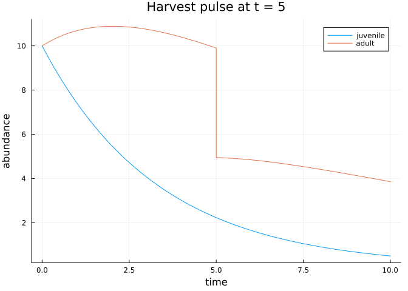
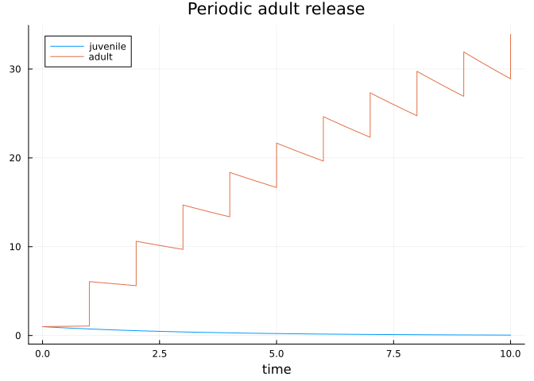
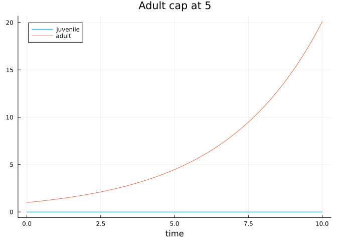
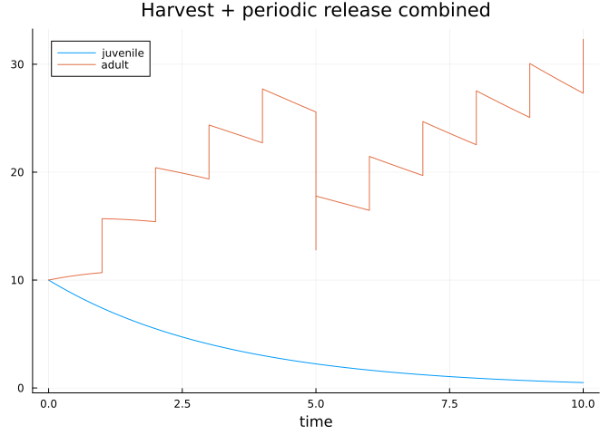

Events and callbacks
Overview
Discrete management actions — harvest pulses, periodic releases, threshold-triggered interventions — are natural for continuous-time population models. FSPD exposes three event helpers on top of SciML callbacks, plus mutators that operate on an integrator by stage name.
Setup
using FiniteStatePopulationDynamics
using StructuredPopulationCore
using OrdinaryDiffEq
using Plots
domain = DiscreteDomain([:juvenile, :adult])
G = [-0.3 0.0;
0.2 -0.1]2×2 Matrix{Float64}:
-0.3 0.0
0.2 -0.1State mutators
The mutators take an integrator (or any struct with a u field) and update abundances by stage name or index:
mutable struct DemoIntegrator
u::Vector{Float64}
end
integ = DemoIntegrator([10.0, 20.0])
set_state!(integ, domain, :juvenile, 5.0)
integ.u2-element Vector{Float64}:
5.0
20.0add_to_state!(integ, domain, :adult, 1.5)
integ.u2-element Vector{Float64}:
5.0
21.5scale_state!(integ, domain, :juvenile, 0.5)
integ.u2-element Vector{Float64}:
2.5
21.5transfer_state!(integ, domain, :juvenile, :adult, 1.0)
integ.u2-element Vector{Float64}:
1.5
22.5transfer_state! clamps when the source is insufficient:
transfer_state!(integ, domain, :juvenile, :adult, 99.0)
integ.u2-element Vector{Float64}:
0.0
24.0Scheduled events
scheduled_event(time, affect!) fires once at time. The affect! closure receives the integrator. Here we harvest 50% of adults at t = 5:
harvest_time = 5.0
harvest! = integ -> scale_state!(integ, domain, :adult, 0.5)
harvest_cb = scheduled_event(harvest_time, harvest!)
prob = FiniteStateGeneratorProblem(G, domain, [10.0, 10.0], (0.0, 10.0);
callbacks = harvest_cb)
sol = solve(prob, Tsit5(); tstops = [harvest_time], saveat = 0.1)
plot(sol.t, hcat(sol.u...)'; labels = ["juvenile" "adult"],
xlabel = "time", ylabel = "abundance",
title = "Harvest pulse at t = 5")
Periodic events
periodic_event(dt, affect!; t0) fires every dt units starting at t0. This demo releases 5 adults once per unit time:
release_cb = periodic_event(1.0, integ -> add_to_state!(integ, domain, :adult, 5.0);
t0 = 1.0)
prob_rel = FiniteStateGeneratorProblem(G, domain, [1.0, 1.0], (0.0, 10.0);
callbacks = release_cb)
sol_rel = solve(prob_rel, Tsit5(); tstops = collect(1.0:1.0:10.0), saveat = 0.1)
plot(sol_rel.t, hcat(sol_rel.u...)'; labels = ["juvenile" "adult"],
xlabel = "time", title = "Periodic adult release")
Threshold events
threshold_event(condition, affect!) fires when the continuous condition crosses zero. Here we cap adult abundance at 5:
cap_condition(u, t, integ) = u[state_index(domain, :adult)] - 5.0
cap_affect!(integ) = set_state!(integ, domain, :adult, 5.0)
cap_cb = threshold_event(cap_condition, cap_affect!)
G_growth = [ 0.0 0.0;
0.2 0.3] # adult growth
prob_cap = FiniteStateGeneratorProblem(G_growth, domain, [0.0, 1.0], (0.0, 10.0);
callbacks = cap_cb)
sol_cap = solve(prob_cap, Tsit5(); saveat = 0.1)
plot(sol_cap.t, hcat(sol_cap.u...)'; labels = ["juvenile" "adult"],
xlabel = "time", title = "Adult cap at 5")
Combining callbacks
combine_callbacks merges two callback objects, handling nothing transparently:
combined = combine_callbacks(harvest_cb, release_cb)
combined isa SciMLBase.CallbackSettruecombine_callbacks(nothing, harvest_cb) === harvest_cb,
combine_callbacks(nothing, nothing) === nothing(true, true)A problem’s stored callback is merged with anything passed to solve:
prob_combined = FiniteStateGeneratorProblem(G, domain, [10.0, 10.0], (0.0, 10.0);
callbacks = harvest_cb)
sol_combined = solve(prob_combined, Tsit5();
callback = release_cb,
tstops = vcat(harvest_time, collect(1.0:1.0:10.0)),
saveat = 0.1)
plot(sol_combined.t, hcat(sol_combined.u...)'; labels = ["juvenile" "adult"],
xlabel = "time",
title = "Harvest + periodic release combined")
Summary
- State mutators:
set_state!,add_to_state!,scale_state!,transfer_state!resolve stages throughstate_index. - Event helpers:
scheduled_event,periodic_event,threshold_eventwrap SciML callbacks with a stage-name-friendly API. combine_callbackslets you layer problem-stored and solver-passed callbacks.